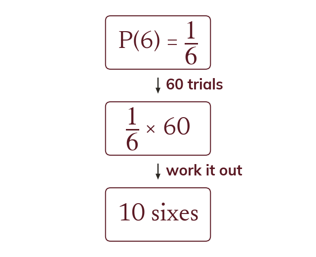

The expected number
Expected number = probability × number of trials. A fair dice rolled times should give about sixes.
The expected number of times an outcome happens is its probability multiplied by the number of trials. A fair dice rolled times is expected to land on about times.